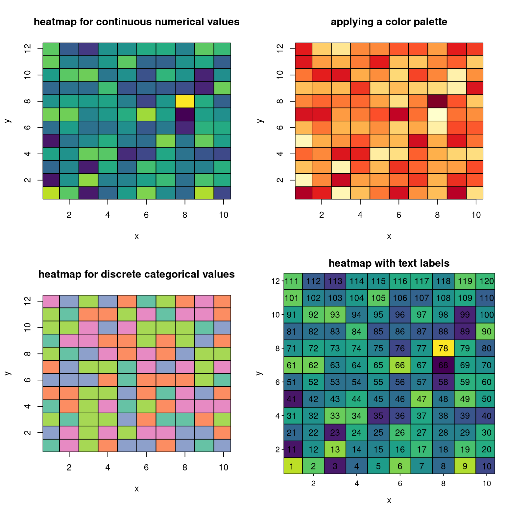
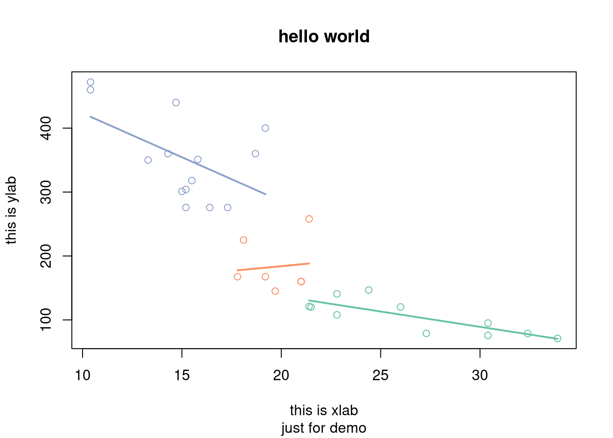
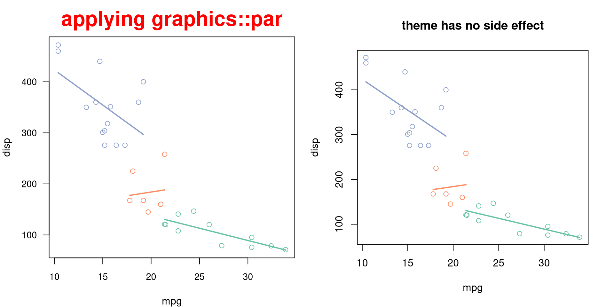
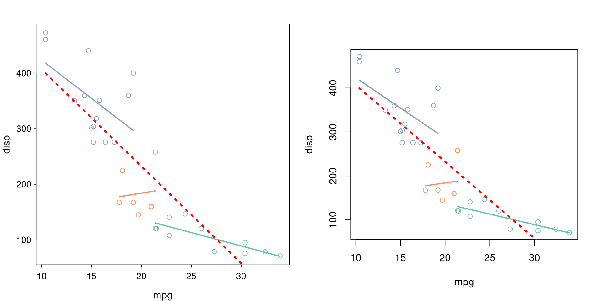
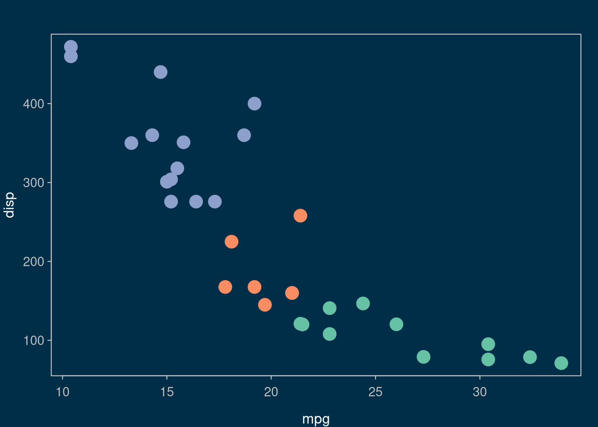

1 Grammar of Graphics for base plot
1.1 Aesthetic mapping
bb_aes() for aesthetic mapping, that equivalents to ggplot2::aes().
library(plotbb)
p <- bbplot(mtcars, bb_aes(mpg, disp, col=factor(cyl)))
p + bb_grid(col='grey50', lty='dashed') + bb_point(pch=19) 1.2 Geometric layer
p2 <- p + bb_point() + bb_lm(bb_aes(group=cyl), lwd=2)
p3 <- p2 + bb_lm(col="red", lwd=3, lty='dotted')
p4 <- p + bb_text(bb_aes(label=cyl), cex=2)
par(mfrow=c(1,3))
p2; p3; p41.2.1 Heatmap
df <- data.frame(x = rep(1:10, 12),
y = rep(1:12, each = 10),
values = rnorm(120, mean = 10, sd = 5),
type = sample(LETTERS[1:5], 120, replace=TRUE),
stringsAsFactors = FALSE)
par(mfrow=c(2,2))
bbplot(df, bb_aes(x,y, col=values)) + bb_tile() +
bb_title("heatmap for continuous numerical values")
bbplot(df, bb_aes(x,y, col=values)) + bb_tile() + bb_scale_col_palette("YlOrRd") +
bb_title("applying a color palette")
bbplot(df, bb_aes(x,y, col=type)) + bb_tile() +
bb_title("heatmap for discrete categorical values")
bbplot(df, bb_aes(x,y, col=values)) + bb_tile() + bb_text(col='black') +
bb_title("heatmap with text labels") + bb_theme_expand()
1.2.2 TODO
- bb_grid
- bb_point
- bb_lm
- bb_text
- bb_tile
- more layers need to be added
1.3 Setting labels
p2 + bb_labs(title = "hello", sub = "just for demo",
xlab="this is xlab", ylab = "this is ylab") +
bb_title("hello world") # last one rules
1.4 Theme
g <- p2 +
bb_theme(col.main="red", cex.main=2,
mar = c(4, 4, 3, 1)) +
bb_title("applying graphics::par")
par(mfrow=c(1,2))
print(g)
p2 + bb_title("theme has no side effect")
bb_theme has no side effect and will only apply to the bbplot object that it added to.
This is very important for developing pre-defined themes.
par(mfrow=c(1,2))
p3 + bb_theme_expand()
print(p3)
p + bb_grid(col='grey50', lty='dashed') +
bb_point(pch=19) +
bb_theme_expand() +
bb_theme_grey() p + bb_point(pch=19, cex=2) +
bb_theme_expand() +
bb_theme_deepblue() 
1.4.1 TODO
-
bb_theme_expand -
bb_theme_grey -
bb_theme_deepblue - develop more pre-defined themes
1.5 Scale
-
bb_scale_col_palette - more to be implemented
1.6 Legend
Not yet implemented
1.7 Using existing code with plotbb
Suppose we have existing code to plot something:
plot(mtcars$mpg, mtcars$disp)
abline(lm(disp ~ mpg, data=mtcars), col='red')We can wrap the codes into a function:
f <- function() {
plot(mtcars$mpg, mtcars$disp)
abline(lm(disp ~ mpg, data=mtcars), col='red')
}Then we can convert it to a bbplot object. The plot produced by the function will be used as the canvas, and we can apply theme and add layers to it:
library(dplyr)
d <- group_by(mtcars, cyl) %>%
summarize(xm=mean(mpg), ym=mean(disp))
pp <- as.bbplot(f) +
bb_theme_expand() +
bb_theme_grey() +
bb_lm(bb_aes(mpg, disp, group=cyl, col=factor(cyl)), data=mtcars, lwd=2, lty='dashed') +
bb_point(bb_aes(xm, ym, col=factor(cyl)), data=d, pch=19, cex=2) +
bb_title("hello plotbb") +
bb_grid(col='grey30', lty='dashed') ## grid lines were plotted as background by defaultAs there are many features currently not available, plotbb supports adding layers using base graphics commands that you are already familiar with. Any base graphics commands in formula, expression or function can be served as layer to be added to a bbplot object.
pp + (~points(30, 400, pch=19, col="red", cex=3)) +
~text(30, 420, label="hae fun :)", col="blue", cex=1.2)